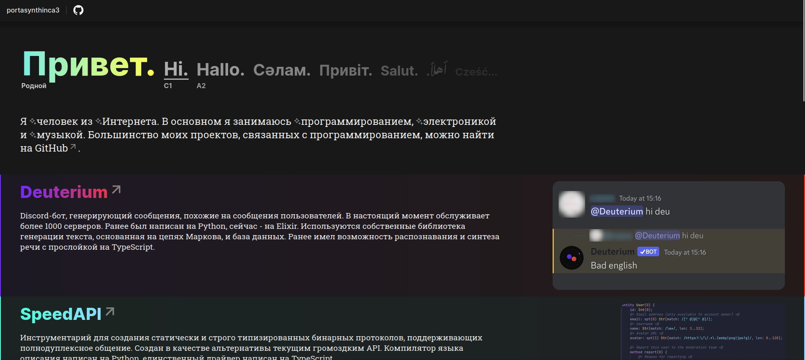

| Привет. | Hi. | Hallo. | Cәлам. | Привіт. | Salut. | .أهلاً | Cześć... |
| Родной | C1 | A2 |
Я человек из Интернета. В основном я занимаюсь программированием, электроникой и музыкой. Большинство моих проектов, связанных с программированием, можно найти на GitHub.

Deuterium
Discord-бот, генерирующий сообщения, похожие на сообщения пользователей. В настоящий момент обслуживает более 1000 серверов. Ранее был написан на Python, сейчас - на Elixir. Используются собственные библиотека генерации текста, основанная на цепях Маркова, и база данных. Ранее имел возможность распознавания и синтеза речи с прослойкой на TypeScript.

SpeedAPI
Инструментарий для создания статически и строго типизированных бинарных протоколов, поддерживающих полнодуплексное общение. Создан в качестве альтернативы текущим громоздким API. Компилятор языка описания написан на Python, единственный драйвер написан на TypeScript.

LED-панель
Стоит на подоконнике в прекрасном undef.space. Показывает время, погоду, спектр аудио со ржением и концентрацию углекислого газа в помещении. Используется микроконтроллер ESP32, фреймворк ESP-IDF и язык C.

Этот сайт
Написан на ассемблере WASM. В режиме реального времени прорисовывает страницу и отправляет фреймбуфер в canvas. Шутка. Но было бы интересно над таким поработать 🤔
↓ Мёртвые проекты
Yamka
Мессенджер, похожий на Discord, с поддержкой сквозного шифрования в личных сообщениях. Использовался бинарный протокол, который стал прародителем базового протокола SpeedAPI. Бэкенд был написан на Erlang, фронтэнд - на HTML, CSS и TypeScript без фреймворков.

Neutron
Операционная система для персональных компьютеров на архитектуре x86-64. Ядро ОС могло инициализировать некоторые комплектующие, загружать и исполнять программы с диска. Дистрибутив поставлял программу инициализации и простейшую графическую оболочку. Была написана на C.
Игры
На самом деле, игры я пыталась делать с первых дней изучения программирования, но эта область никогда мне не давалась. В основном это были мелкие проекты на Unity и C#.
-
Я затронула почти все области разработки ПО
- Разработка игр и машинное обучение нравятся мне меньше всего
- Низкоуровневая и встроенная разработка нравятся мне больше всего
- Я слишком сильно люблю светодиодные ленты и панели
- У меня аллергия на C++ и Java
- Музыка - любовь. Музыка - жизнь.
- На данный момент живу в Москве
- недалеко от меня живёт девушка с таким же именем - Тома
- аня ты такая крутая!! - Камилла 'ова
- шутки настолько же забавны, насколько взаимодействие с дверью - lukflug
- Не назову это слишком большим - lukflug (Deuterium) [BOT]